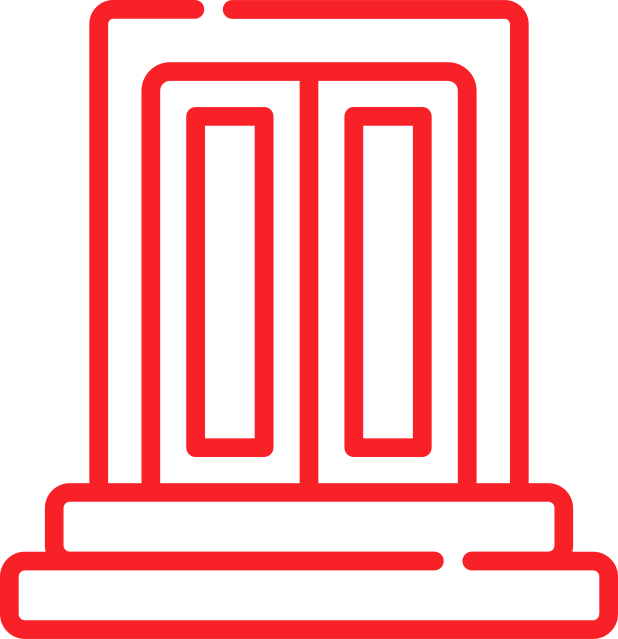

Ragnarok
Voluspa
Stanzas 40-58
The giantess old | in Ironwood sat, In the east, and bore | the brood of Fenrir; Among these one | in monster's guise Was soon to steal | the sun from the sky.
There feeds he full | on the flesh of the dead, And the home of the gods | he reddens with gore; Dark grows the sun, | and in summer soon Come mighty storms: | would you know yet more?
On a hill there sat, | and smote on his harp, Eggther the joyous, | the giants' warder; Above him the cock | in the bird-wood crowed, Fair and red | did Fjalar stand. Then to the gods | crowed Gollinkambi, He wakes the heroes | in Othin's hall; And beneath the earth | does another crow, The rust-red bird | at the bars of Hel.
Now Garm howls loud | before Gnipahellir, The fetters will burst, | and the wolf run free; Much do I know, | and more can see Of the fate of the gods, | the mighty in fight.
Brothers shall fight | and fell each other, And sisters' sons | shall kinship stain; Hard is it on earth, | with mighty whoredom; Axe-time, sword-time, | shields are sundered, Wind-time, wolf-time, | ere the world falls; Nor ever shall men | each other spare.
Fast move the sons | of Mim, and fate Is heard in the note | of the Gjallarhorn; Loud blows Heimdall, | the horn is aloft, In fear quake all | who on Hel-roads are.
Yggdrasil shakes, | and shiver on high The ancient limbs, | and the giant is loose; To the head of Mim | does Othin give heed, But the kinsman of Surt | shall slay him soon.
How fare the gods? | how fare the elves? All Jotunheim groans, | the gods are at council; Loud roar the dwarfs | by the doors of stone, The masters of the rocks: | would you know yet more?
Now Garm howls loud | before Gnipahellir, The fetters will burst, | and the wolf run free Much do I know, | and more can see Of the fate of the gods, | the mighty in fight.
From the east comes Hrym | with shield held high; In giant-wrath | does the serpent writhe; O'er the waves he twists, | and the tawny eagle Gnaws corpses screaming; | Naglfar is loose.
O'er the sea from the east | there sails a ship With the people of Muspell, | at the helm stands Loki; After the wolf | do wild men follow, And with them the brother | of Byleist goes.
Surt fares from the south | with the scourge of branches, The sun of the battle-gods | shone from his sword; The crags are sundered, | the giant-women sink, The dead throng Hel-way, | and heaven is cloven.
Now comes to Hlin | yet another hurt, When Othin fares | to fight with the wolf, And Beli's fair slayer | seeks out Surt, For there must fall | the joy of Frigg.
Then comes Sigfather's | mighty son, Vithar, to fight | with the foaming wolf; In the giant's son | does he thrust his sword Full to the heart: | his father is avenged.
Hither there comes | the son of Hlothyn, The bright snake gapes | to heaven above; . . . . . . . . . . Against the serpent | goes Othin's son.
In anger smites | the warder of earth,-- Forth from their homes | must all men flee;- Nine paces fares | the son of Fjorgyn, And, slain by the serpent, | fearless he sinks.
The sun turns black, | earth sinks in the sea, The hot stars down | from heaven are whirled; Fierce grows the steam | and the life-feeding flame, Till fire leaps high | about heaven itself.
Now Garm howls loud | before Gnipahellir, The fetters will burst, | and the wolf run free; Much do I know, | and more can see Of the fate of the gods, | the mighty in fight.
Ragnarok
In Norse mythology, Ragnarök is a series of events, including a great battle, foretold to lead to the death of a number of great figures (including the Gods Odin, Thor, Tör, Freyr, Heimdallr and Loki), natural disasters and the submersion of the world in water. After these events, the world will resurface anew and fertile, the surviving and returning gods will meet and the world will be repopulated by two human survivors. Ragnarök is an important event in Norse mythology and has been the subject of scholarly discourse and theory in the history of Germanic studies.
Valhalla
Voluspa
Stanzas 1-5
Maiden, awake! | wake thee, my friend, My sister Hyndla, | in thy hollow cave! Already comes darkness, | and ride must we To Valhall to seek | the sacred hall.
The favor of Heerfather | seek we to find, To his followers gold | he gladly gives; To Hermoth gave he | helm and mail-coat, And to Sigmund he gave | a sword as gift.
Triumph to some, | and treasure to others, To many wisdom | and skill in words, Fair winds to the sailor, | to the singer his art, And a manly heart | to many a hero.
Thor shall I honor, | and this shall I ask, That his favor true | mayst thou ever find; . . . . . . . . . . Though little the brides | of the giants he loves.
From the stall now | one of thy wolves lead forth, And along with my boar | shalt thou let him run; For slow my boar goes | on the road of the gods, And I would not weary | my worthy steed.
Valhalla
In Norse mythology, Valhalla ("hall of the slain") is a majestic, enormous hall located in Asgard, ruled over by the god Odin. Chosen by Odin, half of those who die in combat travel to Valhalla upon death, led by valkyries, while the other half go to the goddess Freyja's field Fölkvangr. In Valhalla, the dead warriors join the masses of those who have died in combat (known as the Einherjar) and various legendary Germanic heroes and kings, as they prepare to aid Odin during the events of Ragnarök. Before the hall stands the golden tree Glasir, and the hall's ceiling is thatched with golden shields. Various creatures live around Valhalla, such as the stag Eikpyrnir and the goat Heidrun, both described as standing atop Valhalla.